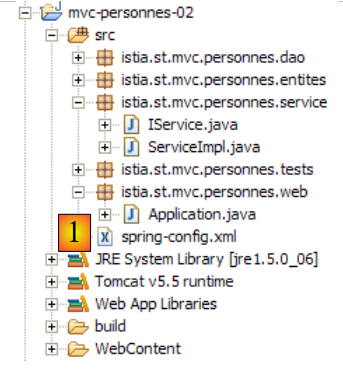
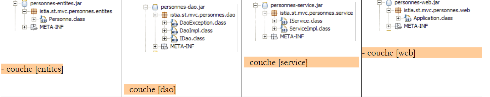
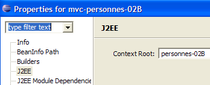

16. تطبيق ويب MVC في بنية ثلاثية الطبقات – المثال 2
16.1. مقدمة
لقد كتبنا تطبيق [people-01] بالهيكل التالي:
 |
قامت طبقة [dao] بتنفيذ قائمة الأشخاص التي تتم إدارتها باستخدام كائن [ArrayList]. وقد سمح لنا ذلك بتجنب تعقيد طبقتي [dao] و[service] بشكل مفرط، حتى نتمكن من التركيز على طبقة [web]. نريد تطوير التطبيق نحو بيئة أكثر واقعية حيث يتم تخزين قائمة الأشخاص في جدول قاعدة بيانات. سيتطلب هذا منا تغيير طبقة [dao]. سيؤثر هذا على الطبقتين الأخريين. للاستفادة من استقلالية الطبقات التي يوفرها Spring IoC، سنأخذ تطبيق [people-01] ونقوم بتكوينه باستخدام Spring IoC:
 |
سيُطلق على التطبيق الجديد اسم [people-02]. وبمجرد كتابته، نعلم أننا سنتمكن من تعديل طبقتي [DAO] و[service] دون تغيير الكود في طبقة [web]. وهذا بالضبط ما نسعى إليه.
نقوم بإنشاء مشروع Eclipse جديد [people-02] عن طريق نسخ ولصق مشروع [people-01]، كما هو موضح في القسم 6.2:
 |
في [1]، نرى ظهور ملف التكوين، الذي سنحدد فيه الفاصوليا لطبقات [dao] و[service]. ومحتواه كما يلي:
<?xml version="1.0" encoding="UTF-8"?>
<!DOCTYPE beans PUBLIC "-//SPRING//DTD BEAN//EN" "http://www.springframework.org/dtd/spring-beans.dtd">
<beans>
<!-- the dao class -->
<bean id="dao" class="istia.st.mvc.personnes.dao.DaoImpl" init-method="init"/>
<!-- service class -->
<bean id="service" class="istia.st.mvc.personnes.service.ServiceImpl">
<property name="dao">
<ref local="dao" />
</property>
</bean>
</beans>
- السطر 5: يُعرّف الفول المسمى [dao] كمثيل لفئة [DaoImpl]. بعد إنشاء المثيل، يتم تنفيذ طريقة [init] الخاصة بالمثيل.
- الأسطر 7-10: تحدد الفاصوليا المسماة [service] كمثيل لفئة [ServiceImpl].
- الأسطر 8–10: يتم تهيئة الخاصية [dao] لمثيل [DaoImpl] بالإشارة إلى طبقة [dao] التي تم إنشاؤها في السطر 5. تذكر أن فئة [ServiceImpl] تحتوي بالفعل على الخاصية [dao] ومُعيّن القيمة المقابل:
بالطبع، هذا الملف وحده لا يفعل شيئًا. ستستخدم وحدة التحكم [Application] هذا الملف في طريقة [init] الخاصة بها لإنشاء مثيل لطبقة [service]. دعونا نستذكر الإصدار السابق من طريقة [init] الخاصة بوحدة التحكم:
في السطر 5، كان علينا تسمية فئة التنفيذ لطبقة [service] بشكل صريح، وفي السطر 12، فئة التنفيذ لطبقة [dao]. مع Spring IoC، تصبح طريقة [init] كما يلي:
- السطر 7: لم يعد الحقل الخاص [service] من النوع [ServiceImpl] بل من النوع [IService]، أي من نوع واجهة طبقة [service]. وبالتالي، لم تعد طبقة [web] مرتبطة بتنفيذ محدد لهذه الواجهة.
- السطر 14: تهيئة الحقل [service] من ملف التكوين [spring-config.xml].
هذه هي التغييرات الوحيدة التي يجب إجراؤها. دعونا ندمج هذا التطبيق الجديد في Tomcat، ونقوم بتشغيله، ثم نطلب عنوان URL [http://localhost:8080/personnes-02]:

16.2. أرشفة تطبيق الويب
لقد قمنا بتطوير مشروع Eclipse/Tomcat لتطبيق ثلاثي الطبقات:
 |
في إصدار مستقبلي، سيتم تخزين مجموعة الأشخاص في جدول قاعدة بيانات.
- سيتطلب هذا إعادة كتابة طبقة [DAO]. وهذا أمر سهل الفهم.
- سيتم تعديل طبقة [service] أيضًا. حاليًا، يتمثل دورها الوحيد في ضمان الوصول المتزامن إلى البيانات التي تديرها طبقة [dao]. ولهذا الغرض، قمنا بمزامنة جميع الطرق في طبقة [service]. وقد أوضحنا سبب وضع هذه المزامنة في هذه الطبقة بدلاً من طبقة [DAO]. في الإصدار الجديد، ستظل طبقة [service] تضطلع بالدور الوحيد المتمثل في مزامنة الوصول، ولكن سيتم التعامل مع ذلك من خلال معاملات قاعدة البيانات بدلاً من مزامنة أساليب Java.
- ستبقى طبقة [الويب] دون تغيير.
لتسهيل الانتقال من إصدار إلى آخر، نقوم بإنشاء مشروع Eclipse جديد [mvc-personnes-02B]، وهو نسخة من المشروع السابق [mvc-personnes-02]، ولكن تم وضع طبقات [الويب، الخدمة، DAO، الكيانات] في أرشيفات .jar:
 |
يحتوي المجلد [src] الآن على ملف تكوين Spring [spring-config.xml] فقط. وكان يحتوي سابقًا أيضًا على شفرة المصدر لفئات Java. تمت إزالة هذه العناصر واستبدالها بنسخها المُجمَّعة الموضوعة في أرشيفات [people-*.jar] الموضحة في [1]:
 |
تم تكوين مشروع [mvc-personnes-02B] ليشمل أرشيفات [personnes-*.jar] في مسار ClassPath الخاص به.
نقوم بنشر مشروع الويب [mvc-personnes-02B] داخل Tomcat:
 |  |
لاختبار المشروع، نقوم بتشغيل Tomcat ثم نطلب عنوان URL [http://localhost:8080/personnes02B]:

ندعو القارئ إلى إجراء اختبارات إضافية.
في إصدار قاعدة البيانات، سنقوم بتغيير طبقتي [service] و [dao]. نريد أن نوضح أنه يكفي عندئذٍ استبدال أرشيفات [personnes-dao.jar] و [personnes-service.jar] في المشروع السابق بالأرشيفات الجديدة حتى يعمل تطبيقنا الآن مع قاعدة بيانات. لن نحتاج إلى المساس بأرشيفات طبقة [web] وطبقة [entities].